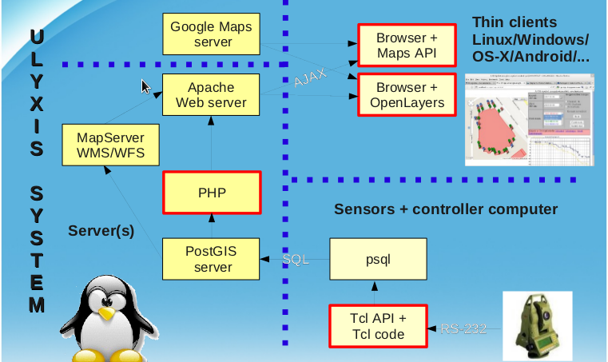

Ulyxes TclApi documentation
TclApi consist of a couple of Tcl
(Tool Command Language) files/procs which
give a higher level interface to drive RTS (Robotic Total Station) from your
computer. This API hides the differences among the different RTS.
Ulyxes TclAPI is released under GNU GPL V2.0.
© Zoltan Siki siki (at) agt.bme.hu
It has been tested with the following type of instruments:
- Leica TCA1800
- Leica TPS120x
- Leica TPS110x
- Leica DNA03
- Trimble 550x
- Garmin GPS18
- Leica GPS 500
Developers
- Zoltan Siki (2010-)
- Daniel Moka (2012-)
- Tamas Kiraly (2013-)
Supported OS (Operating System)
- Linux (probably any distro, tested on Fedora and Ubuntu)
- Windows XP/Vista/7 (32 and 64 bit) (tested on XP/7)
- any other OS with Tcl installed (not tested)
Requirements
- Tcl (Tool Command Language) 8.3 or newer must be installed
- at least one serial port or USB to serial converter (tested with Prolific)
- serial cabel to connect the instrument to the computer
Files
Besides the Tcl source files of the API (common.tcl, global.tcl, etc.)
some sample applications are presented (robot.tcl, measureToPrism.tcl, etc.).
Connection to the Ulyxes
Ulyxes TclApi is part of a larger system, here is the overwiev of the whole
system:
